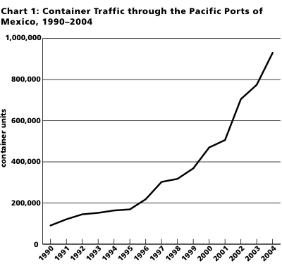
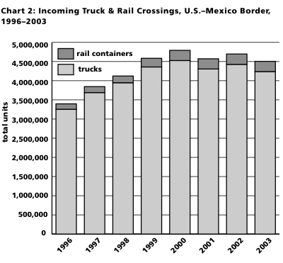

The NAFTA Corridors: Offshoring U.S. Transportation Jobs to Mexico
Submitted on Wed, 04/05/2006 - 7:25pm
Disclaimer - The following article is reposted here because it is an issue with some relevance to the IWW. The views of the author do not necessarily agree with those of the IWW and vice versa.
By Richard D. Vogel - Monthly Review, February 2006.
¡Pobre México! Tan lejos de Dios, y tan cerca de los Estados Unidos.
(Poor Mexico! So far from God, and so close to the United States.)
(Poor Mexico! So far from God, and so close to the United States.)
—General Porfirio Díaz, President of Mexico, 1877–1911
 Capital’s relentless search for cheap labor constantly alters the flow of surface transportation in North America with widespread consequences. The end-of-century deindustrialization of the United States and importation of cheap commodities from the Far East through the West Coast reversed historical east-west transportation patterns and established Los Angeles and Long Beach as the largest ports in the nation. To minimize transportation costs, which for many products are higher than the cost of production, intermodal transportation of containerized imports was developed. Manufactured goods are packed into mobile shipping containers at factories in the Far East and travel by ship, train, and truck to distribution centers and, ultimately, consumer outlets across the United States. Currently, intermodal transportation of cheap imported commodities is the lifeline of the American economy. In 2004, the Port of Los Angeles processed 7.3 million container units and Long Beach handled 5.8 million. These two ports alone accounted for 68 percent of the West Coast total and are, by far, the largest employers in California. U.S. workers, who have seen so many lucrative manufacturing jobs moved overseas, assumed that import transportation and distribution jobs could not be offshored and were, therefore, relatively secure.
Capital’s relentless search for cheap labor constantly alters the flow of surface transportation in North America with widespread consequences. The end-of-century deindustrialization of the United States and importation of cheap commodities from the Far East through the West Coast reversed historical east-west transportation patterns and established Los Angeles and Long Beach as the largest ports in the nation. To minimize transportation costs, which for many products are higher than the cost of production, intermodal transportation of containerized imports was developed. Manufactured goods are packed into mobile shipping containers at factories in the Far East and travel by ship, train, and truck to distribution centers and, ultimately, consumer outlets across the United States. Currently, intermodal transportation of cheap imported commodities is the lifeline of the American economy. In 2004, the Port of Los Angeles processed 7.3 million container units and Long Beach handled 5.8 million. These two ports alone accounted for 68 percent of the West Coast total and are, by far, the largest employers in California. U.S. workers, who have seen so many lucrative manufacturing jobs moved overseas, assumed that import transportation and distribution jobs could not be offshored and were, therefore, relatively secure.
Current transportation trends are proving labor’s assumption to be dead wrong. Sparked by organized resistance and wildcat actions by workers against falling wages and deteriorating working conditions at America’s ports and on the nation’s highways, the flow of container traffic is being shifted to a south-north orientation. By leveraging both the U.S. and Mexican governments and taking advantage of the terms of the North American Free Trade Agreement (NAFTA), big capital is developing container terminals in Mexico and using that country as a land bridge and labor pool to deliver shipping containers to destinations in the United States at discount prices.

Chart 1 depicts the flow of container traffic through the Mexican land bridge under NAFTA. The data in chart 1, which comes from the Mexican Secretary of Communication and Transport and which is reported in the United States by the American Association of Port Authorities (http://www.aapa.org), reflects the dramatic increase of container units through the Pacific ports of Mexico after the treaty went into effect in 1995—450 percent!
Chart 1 signals the beginning of the assault on labor in the north, which could eventually result in the offshoring of hundreds of thousands of transportation jobs to the south and undermine the working class on both sides of the border significantly. The success of this offshoring scheme rests on the development of vast transportation corridors in the United States and Mexico and the extensive exploitation of Mexican labor to both construct and operate the system. The recently established NAFTA Railway (Transportación Ferroviaria Mexicana, Texas Mexican Railway, and Kansas City Southern Railway, merged under control of the latter), which began operations in the Lazaro Cardenas–Kansas City Transportation Corridor in 2003, offers a preview of capital’s offshoring plan in action.
The Lazaro Cardenas–Kansas City Transportation Corridor
A graphic representation of the Lazaro Cardenas–Kansas City Transportation Corridor labeled “Two Worlds...One Route” is available online (http://www.kcsmartport.com). The banner of the Web site is a photograph of the western hemisphere centered on the United States and Mexico with a superimposed profile of the Far Eastern Pacific Rim. Dramatically foreshortened maritime routes that originate in Singapore, Hong Kong, Pusan, and Tokyo sweep across the Pacific Ocean and converge at Lazaro Cardenas on Mexico’s Pacific coast. At the port terminal, containers from the ships are loaded onto the NAFTA Railway which carries them north through the center of Mexico and across the international border at Laredo. In the United States the NAFTA Railway continues north through Texas and Arkansas to Kansas City, Missouri with extensive connections to key distribution points in the Southwest, South, and Midwest. The entire route from the Far Eastern Pacific Rim through Lazaro Cardenas to Kansas City is highlighted on the banner and produces a deceptive visual effect—the route appears intimately to connect the world of the producers to that of the consumers.
A standard map of the Pacific Rim that includes the continental United States presents a far different picture. When a line marking the route from Shanghai (the center of the Far Eastern Pacific Rim) through Los Angeles to Kansas City (an almost straight line) is compared with the dogleg line from Shanghai through Lazaro Cardenas to the same destination, the long detour of the southern route is striking. Calculations reveal that although the land distances of the Los Angeles and Lazaro Cardenas routes are roughly the same, the maritime leg of the Mexican journey is almost 2,000 miles longer. In spite of this 30 percent increase in overall mileage, the NAFTA Railway is offering its customers a 15 percent savings on the cost of shipping import containers through Mexico as compared to Los Angeles or Long Beach.
The NAFTA Railway is paralleled the whole distance of the corridor by highways carrying heavy container traffic. Chart 2 indicates just how heavy the current truck traffic from Mexico is.

Chart 2, based on data from the U.S. Bureau of Transportation Statistics (http://www.bts.gov), allows the comparison of total truck to rail container crossings into the United States from Mexico for 1996–2003. (The slight drop in truck traffic for 2001–2003 reflects a change in reporting procedures rather than a decline in traffic.) The preponderance of truck traffic is massive—since 1999, well over 4 million trucks per year have crossed the southern U.S. border headed north.
Like the railway, the largest NAFTA highways converge and cross the international border at Laredo. In Mexico, the NAFTA highways are part of the Federal Highway System, while in the United States they represent some of the most heavily traveled sections of the Interstate Highway System, most notably, I-35 which runs through the center of Texas, Oklahoma, and Kansas and has been dubbed the “NAFTA Superhighway.” The proposed NAFTA corridors, which are in the promotional and pre-construction stage, will dwarf the capacity of the existing NAFTA highways and railways. To assess the economic and environmental impact of the NAFTA corridor system, the size of the proposed corridors and the volume of traffic they are slated to carry must be considered.
A Look at the NAFTA Corridors
Although I-5 and I-15 originating in Tijuana and serving the western states, I-19 connecting Nogales and Tucson, and I-10 that serves Ciudad Juárez/El Paso and provides an essential east-west link in the system, are all important NAFTA highways—the two priority segments of the NAFTA corridor system in the United States are the I-35 Corridor and the proposed I-69 Corridor both of which will originate in Laredo and carry NAFTA freight all the way to the American Midwest. When the I-35 Corridor is completed it will extend 1,600 miles north to the U.S./Canada border. Along the route it will serve San Antonio, Austin, Dallas/Ft. Worth, Oklahoma City, Wichita, Kansas City, Des Moines, Minneapolis/St. Paul, and Duluth. The proposed I-69 Corridor will also originate in Laredo but will head northeast, serving Houston, Texarkana, Memphis, Evansville, Indianapolis, and Lansing to the U.S./Canada border at Port Huron, a total of approximately 2,100 miles. Promoters of the NAFTA corridors tout the system as the largest engineering project ever undertaken in U.S. history. What they fail to publicize, however, are the economic costs of the system and how the massive project will alter the landscape and environment of America forever. These undeclared consequences, however, will be calamitous:
Land Consumption: The NAFTA corridors will be up to 1,200 feet wide with separate lanes for passenger vehicles (three in each direction) sandwiched between truck lanes (two in each direction). The corridors will also contain six rail lines (three in each direction): two tracks for high-speed passenger rail, two for commuter rail, and two for freight. The third component of the corridor will be a 200-foot-wide utility zone. To accommodate the railways and underground utilities, the corridors will run at grade level and will require extensive bridging at crossovers and intersections. The current estimate is that a typical corridor section will require 146 acres of right-of-way per mile, making the anticipated land consumption for the NAFTA corridors 584,000 acres in Texas alone (For a detailed critique of the Trans Texas Corridor Plan see http://www.corridorwatch.org). Total land consumption in the United States for the NAFTA corridors could exceed 1 million acres. Since the corridors are going to be routed through rural areas, this means they will consume a total area of agricultural land and open spaces almost as large as the land area of the state of Vermont.
Pollution: The heavy traffic on the NAFTA corridors will produce unprecedented pollution. Traffic projections for the year 2025 estimate 82,100 vehicles per day (including 18,100 trucks) on the busiest section of the I-35 Corridor, and estimates for I-69 traffic are comparable. The vehicle speed limit on the corridors will be 80 mph, and semi- and multi-trailer trucks ten-feet longer and five-tons heavier than those on the road today will be permitted, producing levels of air, water, and land pollution that far exceed those prevalent along the current NAFTA highways. The existing pollution hotspots along I-10 east of Houston with the nation’s highest death rates from diesel fine particle emissions offer a preview of what is to come (http://www.catf.us/).
Economic Costs: Based on the estimated construction cost of $31.4 million per mile, the 4,000-mile Texas sections of the NAFTA corridors will cost $125.5 billion, not including right-of-way and miscellaneous costs. Adding in right-of-way costs of $11.7–$38 billion and miscellaneous costs of $8–$20 billion, the estimated total outlay for the NAFTA corridors in Texas ranges from $145.2 billion to $183.5 billion. Cost estimates for the entire NAFTA corridor system have not been disclosed but could double those figures. Public return on this massive investment will be minimal because, even though the NAFTA corridors will be toll roads, most of the profits will flow to private entities under exclusive development agreements with the various state governments. This move to privatize highways contrasts sharply with the U.S. Interstate Highway System that was built with public money and benefited the nation at large.
Downplaying the staggering economic costs and devastating environmental impact of the NAFTA corridors, promoters are calling the proposed transportation system a “world class concept” that “paves the way—literally—to the future.” Getting beyond the promotional rhetoric in order to put the issues of the economic costs and environmental destruction of the NAFTA corridors in perspective involves confronting one of the primary hidden agendas of the project—the massive offshoring of U.S. transportation jobs to Mexico in order to further capitalist accumulation at the expense of the working class on both sides of the border.
Offshoring U.S. Transportation Jobs
Building and operating the NAFTA corridor system will require an army of labor, and capital is looking for the cheapest labor it can find to maximize profits. To meet their manpower needs, the developers and operators of the NAFTA system are planning to exploit Mexican labor on an unprecedented scale. Chronic structural unemployment in Mexico and political vulnerability in the United States have rendered Mexican workers prime candidates for exploitation, and they are already being widely tapped for highway construction projects.
The current official estimate of highway construction laborers in the United States is between 750,000 and 1 million workers, but that is a gross undercount. Tens of thousands of workers are delivered daily to highway construction sites across the nation by labor contractors to work “off the books.” Unofficial observations of these sites indicate that in the Southwest the vast majority of these casual workers are Mexican and Central American nationals and the demand for their labor is spreading throughout the nation. Raids by immigration authorities were suspended early in the Bush administration, and the president is advocating a “guest worker” program for immigrants in order to meet the growing manpower demand. Though the exploitation of immigrants, both legal and illegal, to build the NAFTA corridor system will be heretofore unparalleled, the offshoring of U.S. transportation jobs will have a substantially larger and longer lasting impact on labor on both sides of the border.
The list of transportation jobs that will be offshored to Mexico is long: port employees from supervisors and inspectors to crane operators and longshoremen; railroad construction and maintenance workers and supervisors; railroad operators; warehouse workers and supervisors; highway construction and maintenance workers; local and long haul truck drivers; and an army of logistical support workers for the entire network. The preparation for this massive offshoring has been in progress for more than a decade—the ongoing privatization of the Mexican economy and the ground transportation rules of NAFTA are facilitating the plan to divert jobs to the south.
The Privatization of the Mexican Economy
Traditionally, the Mexican economy was ruled by the constitutional principal that Mexican land and its fruits belonged to Mexican citizens, but the principal of national sovereignty ended when the IMF and World Bank imposed extensive privatization programs and opened Mexico to foreign investors in the wake of the debt crisis in 1982. Since then, over a thousand state-owned enterprises have been transferred to private ownership, including Telmex, the national telephone company, Aéromexico, the national airline, and the historically important state-owned copper mines. In 1995, Mexico began to decentralize and partially privatize the nation’s seaport operations, creating the opportunity for 100 percent foreign investment in terminal ownership and up to 49 percent in each port’s operating authority. The privatization trend is continuing apace. In addition to the container terminal at Lazaro Cardenas, privately owned terminal facilities are currently being operated and expanded in Ensenada and Manzanillo on the Pacific coast and Veracruz and Altamira on the Gulf coast. A multibillion-dollar megaport at Punta Colonet to divert the flow of Far Eastern imports from Los Angeles and Long Beach through Baja California is in the planning stage.
In addition to the takeover of Mexican ports, the ongoing privatization of Mexican railroads is another key element in the offshoring plan. In 1997, the privatization of government-owned railroads began, making possible the merger of the NAFTA Railway and the opening of the Lazaro Cardenas–Kansas City Transportation Corridor. Currently, other U.S. railroads, including the Union Pacific and the Burlington Northern Santa Fe, are vying for a share of the lucrative NAFTA rail traffic from Mexico.
Beyond the privatization of Mexican ports and rails, the scheme by U.S. shippers to use Mexico as a land bridge has been sweetened by recent legislation passed by the Mexican government that removed bonds on through traffic and now allows the free transport of containers from Pacific Rim nations to the United States across Mexican territory.
Along with the privatization of the Mexican transportation infrastructure and costly concessions by the Mexican government, access to cheap transportation labor in Mexico is central to the operation of the NAFTA corridors. That access was guaranteed by the ground transportation rules of NAFTA.
Ground Transportation under NAFTA
Although the negative impact of the massive offshoring of U.S. production jobs to Mexico under NAFTA has been widely documented and denounced, the impending threat to U.S. transportation jobs has been all but ignored despite the fact that the rules governing ground transportation under NAFTA were carefully articulated to accommodate the eventual offshoring of U.S. trucking, railroad, and other material moving jobs to the south. According to the terms of the treaty, Mexican trucks driven by Mexican drivers are ultimately to be given full access to American highways, and, as of 2004, foreign individuals or corporations can own up to 100 percent of Mexican ground transportation companies, including trucking services and terminals. Though Mexican trucks were restricted to the immediate border area for the first ten years under NAFTA because of environmental impact lawsuits, the U.S. Supreme Court has recently cleared that roadblock, and the Bush administration has called for full access as soon as the safety of Mexican trucks can be certified.
The safety of Mexican trucks will no longer be an issue with the full implementation of the NAFTA ground transportation rules—U.S.-owned fleets of modern trucks driven by Mexican drivers will operate out of U.S.-owned terminals in Mexico to deliver imports to the north via the NAFTA corridors. Currently the big shippers are successfully recruiting and training Mexican drivers on both sides of the border for the jobs. The negative impact of NAFTA on other sectors of the Mexican economy have produced high structural unemployment and low wages, conditions that guarantee a large pool of job candidates in Mexico. In the United States, both documented and undocumented Mexican workers are more than willing to abandon grueling construction, field, and sweatshop work for driving jobs.
The driving jobs created in Mexico will not be limited to those generated by the diversion of container traffic. Large importers such as Wal-Mart and Costco have already expressed interest in developing huge distribution centers near the container ports in Mexico that will break out many of the container loads and reload the commodities on company trucks bound directly for retail outlets in the United States. Relocating distribution centers presently located near U.S. ports to Mexico will add significantly to the total number of U.S. transportation jobs that will be offshored south of the border.
Punta Colonet: ‘The Future Mexican Long Beach’
Nothing exposes the scope of big capital’s grand scheme to offshore U.S. transportation jobs to Mexico like the multibillion-dollar megaport planned for Punta Colonet, which is referred to in trade publications as “the future Mexican Long Beach.” Located on Baja’s desolate Pacific Coast 120 miles south of the border, Punta Colonet and 27,000 surrounding acres are slated to become one of the largest maritime transportation centers on North America’s Pacific coast. A deepwater harbor capable of accommodating the new super-sized container ships too big to navigate the Panama Canal will be dredged, and it will be connected to the border by a two-way rail line and multi-lane highway through the desert and over the Juarez Mountains. Since nothing exists at the site now, an entire town and port infrastructure will have to be constructed. Rampant land speculation in the area has already inflated land prices from five cents to five dollars per square meter.
According to current projections, six million containers of Far Eastern imports a year will pass through Punta Colonet by 2025. These containers will enter the United States through California’s Imperial Valley via rail and truck and be dispatched across the country. Most of the truck traffic will be routed east on I-8, which connects to I-10 in southern Arizona. Upon completion of the project, the Punta Colonet-I-10 corridor will be an integral part of the NAFTA corridor system. And though it is impossible to estimate the exact number of U.S. transportation jobs that will be offshored to Punta Colonet, according to one regional planning model, the new port city will be home to some 250,000 residents by 2025. Extrapolating from the average employment rate in Mexico (42 percent) suggests well over 100,000 jobs in Punta Colonet, the vast majority related to the port and intermodal transportation.
A glance at a map showing southern California and the Mexican state of Baja with the Punta Colonet-I-10 connection penciled in clearly illustrates another major tributary in the shifting flow of surface transportation in North America to take advantage of cheaper labor.
The Challenge to Labor
Through the development of the NAFTA corridors, big capital is consolidating its position to offshore U.S. transportation jobs on an unprecedented scale in order to reap windfall profits. The shipping firms involved in the scheme are using the international border between the United States and Mexico as a dividing line to pit U.S. and Mexican workers against each other in order to instigate a wage war that only big capital can win. The cost of the NAFTA corridors will be high on both sides of the border—there will be further dislocation and debasement of labor in the United States, intense labor exploitation in Mexico, spiraling oil dependency, the mass consumption of open spaces, and irreversible damage to the environment all along these international transportation routes—all of this in the name of cheap commodities to maintain profits for U.S. capitalism.
While the offshoring of production jobs to Mexico under NAFTA has been a boon to U.S. capitalism, the negative impact on labor has been well documented. Between the signing of NAFTA in 1993 and the year 2002, 879,280 production jobs in the United States were displaced. Most of these lost jobs were relatively high-wage positions in manufacturing industries. And while many of these jobs were offshored to the Far Eastern Pacific Rim during this period, a significant number were relocated to Mexico under NAFTA. The manufacturing centers of the Northeast and Midwest and the states of California, Texas, and Florida were hit the hardest. NAFTA has also contributed to rising income inequality, suppressed real wages for production workers, weakened workers’ collective bargaining powers and ability to organize unions, and reduced fringe benefits in the United States. Overall, Mexican labor did not benefit from NAFTA either. Though employment was up, real wages fell significantly and there was a sharp decline in the number of workers holding regular jobs. Structural unemployment remains high, and many Mexicans work as casual employees or labor for subsistence wages in the informal economy.
The offshoring of transportation jobs to Mexico, which will produce more of the same, is imminent. Utilizing their political clout at the state and national level, and spurred on by the U.S. Supreme Court decision facilitating the widespread seizure of land by states for private economic development, big capital has already begun construction on sections of the I-35 and I-69 Corridors in Texas under exclusive development agreements without disclosing the terms of those contracts. Despite opposition to the NAFTA corridors by local communities and some special interest groups, the Texas Department of Transportation is going all out to promote the Texas section of the NAFTA corridor system through numerous Web sites (http://www.keeptexasmoving.org) and by conducting carefully staged public meetings to fabricate a sham political consensus in the state. In short, the NAFTA corridor plan is gaining momentum and will have to be confronted sooner or later.
The Impact on Mexico
While many workers north of the border will loose their jobs and the wages and working conditions of the remaining transportation jobs will be undermined, the direst consequences of the offshoring of U.S. transportation jobs will fall on Mexican workers. The conditions of employment and existence faced by transportation and distribution workers will be as bad as, if not worse than, those currently suffered by maquiladora production workers. Wages for these jobs will be below subsistence levels, and slum housing and lack of social services will be the norm.
The predicament of the NAFTA truck drivers will be especially problematic and precarious. The majority will be Mexican nationals residing and employed in Mexico but doing most of their work in the United States. Assuredly, they will have to observe U.S. traffic and transportation laws, but they will not enjoy even the minimal standards offered to American workers under current U.S. labor law. Their wages and working conditions, which will be determined by the “free” market, will be harsh and difficult to confront, because Mexican workers’ rights and ability to organize and operate unions are already severely restricted and will be further curtailed. Historically, Mexican labor law has been more liberal than that in the United States, but the advent of NAFTA has seen the widespread suppression of labor rights to accommodate transnational corporations through the creation of government-sponsored company unions which help to enforce protectionist contracts. Labor rights for Mexican drivers, in any traditional sense, might be non-existent in the NAFTA corridors.
Fortunately, North American labor already has valuable experience in confronting globalization that can guide union actions in the impending struggles in the transportation industry.
Allies Across the Border[*]
Mexico’s most important independent labor union federation, the Authentic Labor Front (Frente Autentico del Trabajo, or FAT), which knew that NAFTA would undermine workers in both the north and the south and which has led the struggle for worker’s rights since before the treaty was signed, offers a model for future union struggles in North America. FAT played a key role in forming the Mexican Action Network Confronting Free Trade (RMALC), an umbrella organization that advocates transnational labor solidarity and specifically addresses the issue of offshoring U.S. jobs to Mexico:
The best way to defend jobs in the United States is to work together to elevate the levels of salaries and workplace and environmental conditions in Mexico, so that our misery stops being the way we compete with our fellow workers to the north. We Mexicans are not enemies but strategic allies for all workers north of the Rio Grande.
In 1991, FAT formed a strategic alliance with the progressive U.S.-based United Electrical Workers Union (UE) which is committed to international labor solidarity (http://www.ueinternational.org/). The UE explained succinctly why they joined the alliance:
We must build an international labor movement focusing on cross-border organizing. If we fail, we face common misery. If we succeed, workers will be able to unite in their demands for decent wages and working conditions on both sides of the border.
The theory of linking allies across the border was tested in 1997 when FAT joined with the Teamsters, the UE, the United Steelworkers, the Paperworkers, the Canadian Autoworkers, and UNITE to form a workers alliance to confront Echlin, an international auto parts company with plants is all three NAFTA nations. The Statement of Solidarity and Purpose of the Echlin Tri-National Alliance is a remarkable document:
We are united in the belief that in this era of the global corporation and unrestrained corporate greed, we must seek new and concrete forms of solidarity between workers employed by the same multinational corporation....As our bosses cross national boundaries in search of ever higher profits, our solidarity must also cross borders to build a strong international workers movement....
We therefore pledge and agree to work to the following:
- We will build rank-and-file solidarity between unionized Echlin facilities in North America and will offer each mutual aid and support to strengthen our hand at the bargaining table.
- We will attempt to organize the thousands of unorganized Echlin workers throughout North America to bring justice to their workplaces and increase our collective strength in the chain.
- We will make a special effort to support Echlin workers in Mexico, who suffer the lowest wages and worse conditions and who face the worst repression when they stand up for their rights.
The UE-FAT Alliance has proven to be both durable and mutually beneficial with UE providing critical support for independent union action in Mexico and FAT representatives helping the UE organize Mexican workers in the United States. The alliance’s winning strategy clearly offers a starting point for confronting offshoring in the transportation industry.
Clearly, a titanic labor struggle lies ahead. The governments of both Mexico and the United States have been complicit in the sustained war on the workers that capital has been waging relentlessly for the last three decades. Undeniably, both the U.S. and Mexican labor movements have suffered serious setbacks under NAFTA. But the offshoring of U.S. production and transportation jobs and the wholesale exploitation of Mexican workers are just one facet of global capital’s assault on international labor and must be considered in that context. The dialectic of global exploitation and labor’s response is the next subject to which we must turn.
Notes
[*] The title of this section and the quotes in it are borrowed from dale Hathaway’s book, Allies Across the Border: Mexico’s “Authentic Labor Front” and Global Solidarity, essential reading for anyone concerned with the future of unions in the global economy.